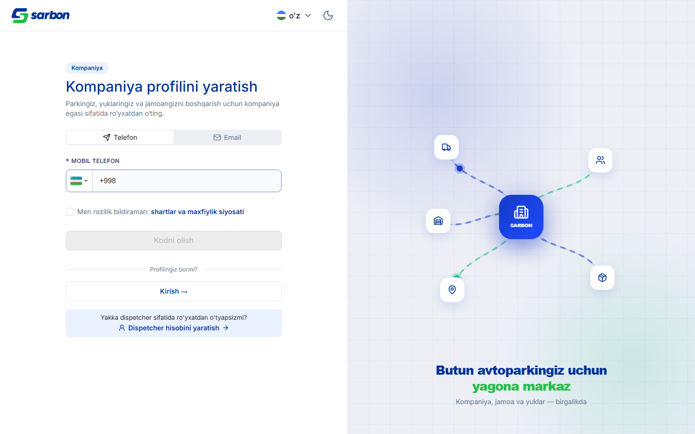
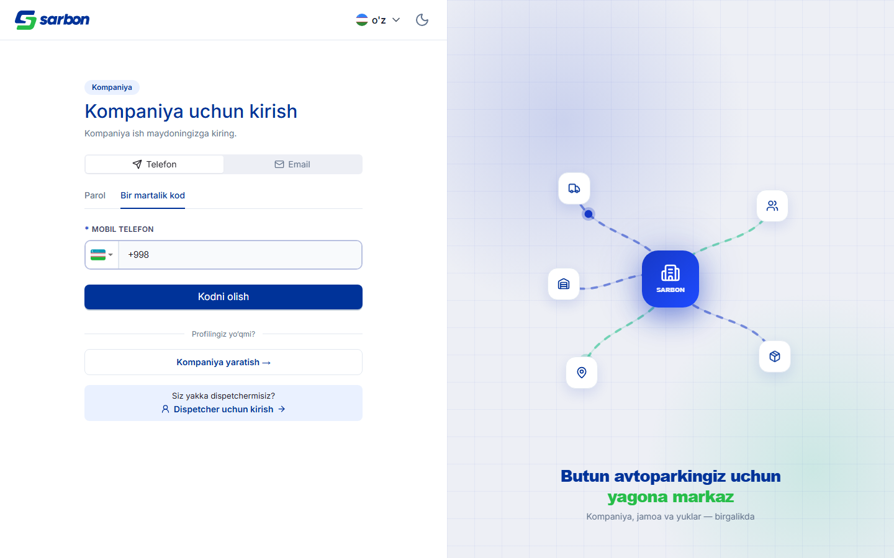
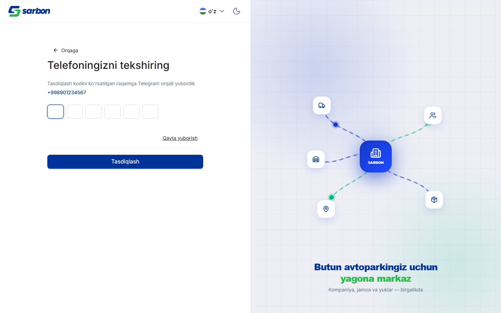
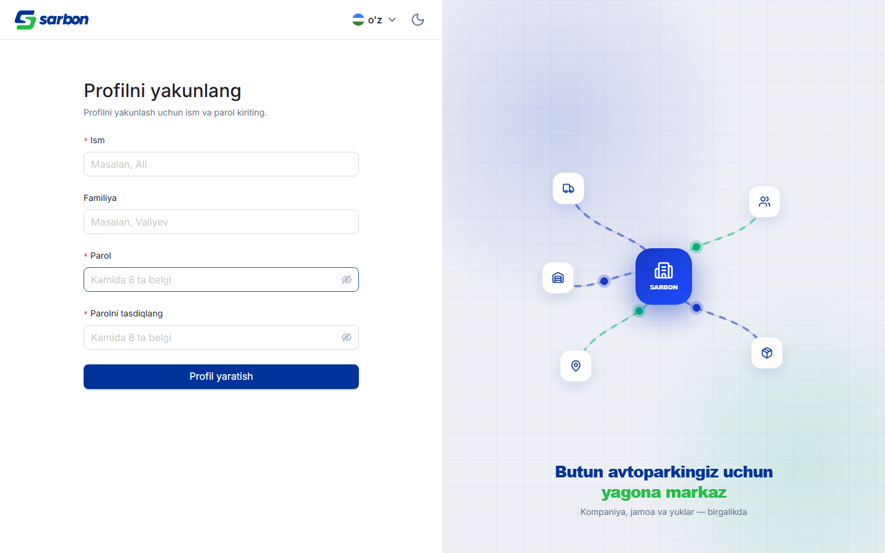
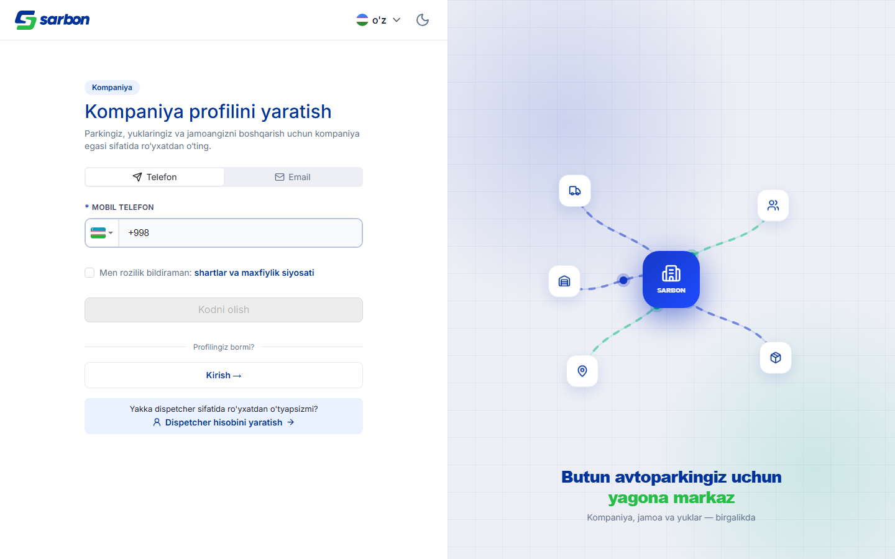
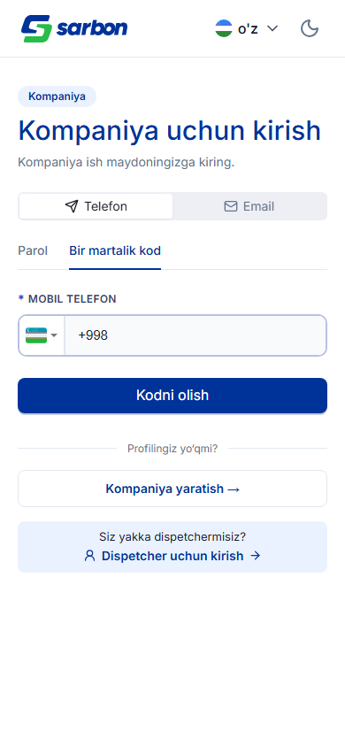

14.07.2026 — день раздела «Компания». У владельца компании появился собственный сквозной путь: регистрация по телефону с подтверждением через Telegram-OTP → шаг «Профилни якунланг» (имя + пароль); вход с вкладками «Пароль» и «Одноразовый код»; страницы завершения профиля и создания компании; приложение владельца — главная с карточками-статусами (кликабельны и ведут прямо на детальную), профиль в стиле основного приложения (сайдбар личности + вкладки «Личное» / «Аккаунт», выход убран из навбара в профиль, на мобильном — внизу страницы), и детальная страница компании (просмотр/редактирование через GET/PATCH /v1/companies/:id + вкладка «Грузы»). Правый баннер входа переделан: вместо концентрических «радарных» колец и прямых спиц (выглядело как прицел) — центральный HQ SARBON, вокруг асимметрично разбросаны иконки-узлы (парк, команда, грузы, маршруты, склад), к центру ведут волнистые змеевидные маршруты, по которым внутрь к хабу летят светящиеся «пакеты»; фон-сетка/свечения сохранены, поведение безопасно для reduced-motion и корректно в тёмной теме. Отдельно: поле OTP теперь активно сразу (первая ячейка выделена в момент появления — код можно вводить без клика; при неверном коде фокус возвращается на первую ячейку); запись кружка-видео/голосового больше не лагает (секундомер вынесен во внешний стор, отрисовка canvas и волны ограничены частотой захвата); экран «Аккаунт на проверке» перестроен так, что кнопки не ломают вёрстку в длинных локалях, а связь с поддержкой ведёт в Telegram/Email/звонок; и диспетчерский баннер входа получил тёмную тему.
| Область | Что было / причина | Что сделано | Файлы |
|---|---|---|---|
| Раздел «Компания» — приложение владельца feature закоммичено |
У компании-владельца не было своего интерфейса — только диспетчер и админ. Нужна третья личность: регистрация, ведение компании, профиль. | Главная (карточки-статусы → прямая ссылка на детальную), профиль (сайдбар личности + «Личное»/«Аккаунт», выход перенесён из навбара в профиль, мобильный выход — внизу), детальная страница компании (GET/PATCH /v1/companies/:id + вкладка «Грузы»), создание компании; стор useCompanyAuthStore, типы, утилиты, гварды маршрутов. | pages/company/{home,profile,detail,create} · CompanyLayout · useCompanyAuthStore · companyTypes · CompanyRouteGuards, локали ×15, тесты |
| Раздел «Компания» — вход и регистрация feature закоммичено |
Владельцу нужен отдельный вход/регистрация (телефон + Telegram-OTP), не смешанный с диспетчерским. | Регистрация: телефон → OTP → «Профилни якунланг» (имя/пароль). Вход: вкладки «Пароль» / «Одноразовый код». Страницы OTP и завершения профиля. Кросс-ссылки диспетчер↔компания. Языко-префиксные маршруты и гварды. | pages/company/auth/{register,login,otp,complete} · companyOtpChannels.ts · RootRouter · paths.ts, локали ×15 |
| Баннер входа компании — из «прицела» в логистическую сцену design закоммичено |
Правая анимация входа выглядела как «снайперский прицел»: концентрические пульсирующие кольца + прямые спицы от центра по сетке. | Центр — HQ SARBON; вокруг асимметрично разбросаны иконки-узлы; к центру ведут волнистые «змеевидные» маршруты (S-кривые, чистый хелпер makeSnakePath), по которым внутрь летят светящиеся «пакеты» (SMIL animateMotion). Фон-сетка/свечения сохранены; reduced-motion — статично, пакеты скрыты; темы light/dark. | layouts/auth-layout/banners/CompanyAuthBanner.tsx |
| Автофокус поля OTP + возврат фокуса при ошибке feature закоммичено |
Когда появлялось поле кода, приходилось сначала кликнуть в него — лишний шаг на каждом входе/регистрации; при неверном коде фокус не возвращался. | Общий OtpField: focus() на первую ячейку при монтировании; при очистке поля после неверного кода — повторный фокус на ячейку 0. Одно изменение покрывает вход, регистрацию, восстановление и смену телефона/email в профиле. | components/ui/OtpField.tsx |
| Запись видеосообщений лагала (ПК/ноутбук/телефон) bug perf закоммичено |
Во время записи кружка-видео (и голосового) весь UI чата и превью лагали: секундомер писался в React-стейт ~10×/сек внутри ~1145-строчного ChatPage → перерисовывались тред и композер; canvas рисовался на частоте дисплея при захвате 30fps; волновая дорожка — ~60fps. | Секундомер вынесен во внешний стор (elapsedClockStore + useSyncExternalStore в новом RecordingClock) — на тик перерисовывается только <span>; canvas ограничен частотой захвата (rVFC / rAF ~30fps); VoiceWaveBars — гейт ~30fps. Применено к обоим рекордерам. | hooks/elapsedClockStore.ts(new) · useVideoNoteRecorder · useVoiceRecorder · RecordingClock(new) · ChatComposerPanel · VoiceWaveBars, тест |
| Экран «Аккаунт на проверке» + связь с поддержкой feature bug закоммичено |
Кнопки статуса модерации ломали вёрстку в длинных локалях (uz «Qo‘llab-quvvatlashga murojaat» переносил «Chiqish» на вторую строку); «Связаться» вело на tel:, email-кнопки не было. | Перестроен без AntD Result: полноширинная «Проверить снова» (не переносится), карточка «Что дальше?», текстовый «Выход»; SupportChannels — вертикальные брендовые строки: Telegram @Sarbonme, Email info@sarbon.me, звонок +998 95 005 66 11. Тот же экран — для «Аккаунт отклонён». Слово account-смысла uz/oz «Hisob»→«Profil» (омонимы сохранены). | shared/moderation/{SupportChannels(new),AccountUnderReviewScreen,AccountRejectedScreen} · constants/support.ts, uz/oz + локали ×15 |
| Диспетчерский баннер входа — тёмная тема bug закоммичено |
На /auth/* в тёмной теме левая форма темнела, а правый баннер (грузовик на дороге) оставался светло-лавандовым — резкий разрыв. | Баннер извлечён дословно до появления системы тем — большие поверхности были захардкожены светлыми hex. Добавлены dark:-варианты фона и дороги, подпись переведена на var(--sarbon-text-muted). Грузовик/пины оставлены (читаются как «ночная езда»). | layouts/auth-layout/banners/DispatcherAuthBanner.tsx |
| Регистрация компании: телефон диспетчера доходил до OTP и падал криптично bug закоммичено |
Телефон, уже принадлежащий диспетчеру (DRIVER/CARGO-manager), проходил весь путь: auth/phone(200, OTP) → verify(200) → complete(400 «Invalid request body»). Конфликт всплывал только в конце, после потраченного OTP, общим сообщением. | Шаг завершения: 400 трактуем как конфликт личности → предупреждение company.register.phoneUsedByDispatcher + возврат на шаг телефона. Forward-совместимо: строгая ветка 409 на шаге телефона (сработает до OTP, как только бэкенд начнёт отклонять) + переписан бэкенд-тикет. Чистые хелперы + юнит-тесты. | pages/company/auth/companyRegisterConflict.ts · CompanyRegisterPage · CompanyCompletePage, тест, бэкенд-тикет |
Все снимки сделаны в реальном приложении (dev-сервер на staging-API, 1440×900 и мобайл 390×844). Правый баннер — новая сцена: центр SARBON, разбросанные узлы, змеевидные маршруты и летящие к хабу «пакеты».






При сверке git-диффа дня с отчётом обнаружены изменённые области, которые не были задокументированы. Добавлены ниже (текстовая доработка отчёта, без скриншотов).
Полный дифф дня — 144 файлов.
| Область | Значимость | Файлы / коммит |
|---|---|---|
| Переработка ВОСПРОИЗВЕДЕНИЯ видео-заметок/голосовых в чате (useChatPlaybackStore + ChatPlaybackBar, переписаны ChatVideoNoteMessage/ChatVoiceMessage/MessageBubble/useChatMediaSrc) | КРУПНОЕ | коммит d285f170 (назван «input otp auto selection», но ~1015 строк): useChatPlaybackStore.ts (97), ChatPlaybackBar.tsx (116) + тесты |
| Переработка админ-очереди модерации компаний (AdminCompaniesPage + CompanyModerationQueue/AdminCompanyDetailDrawer/CompanyModerationActions/companyModeration.ts + AdminModerationPage) | КРУПНОЕ | AdminCompaniesPage.tsx (+569), CompanyModerationQueue.tsx (new 215), CompanyModerationActions.tsx (new 186) — коммит 877924a3, в отчёте описана только company-detail страница |